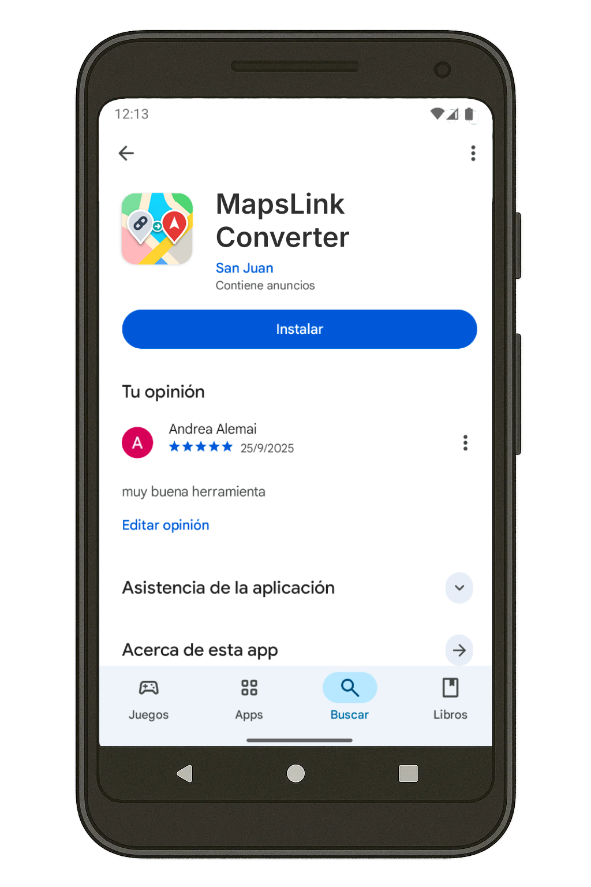
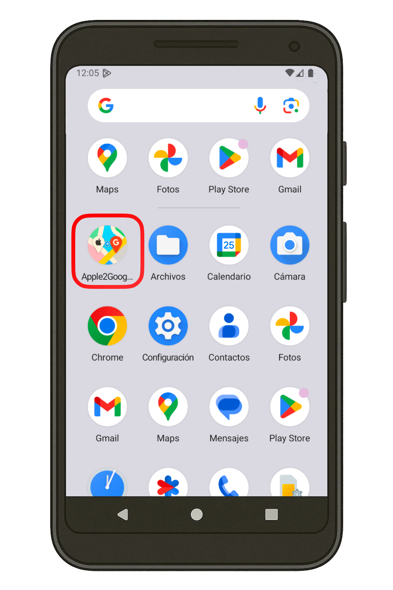
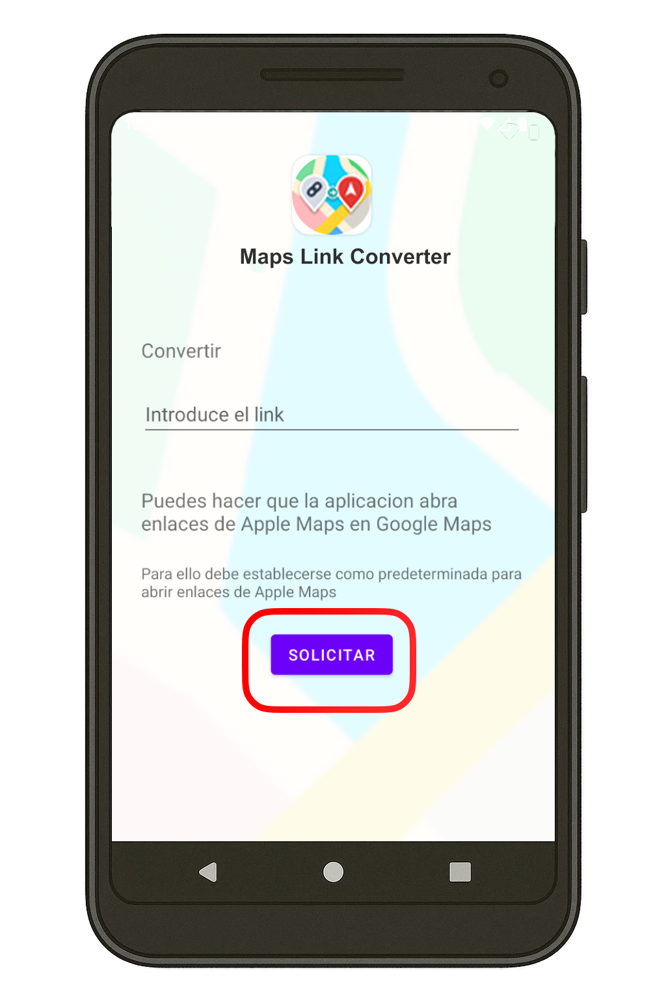
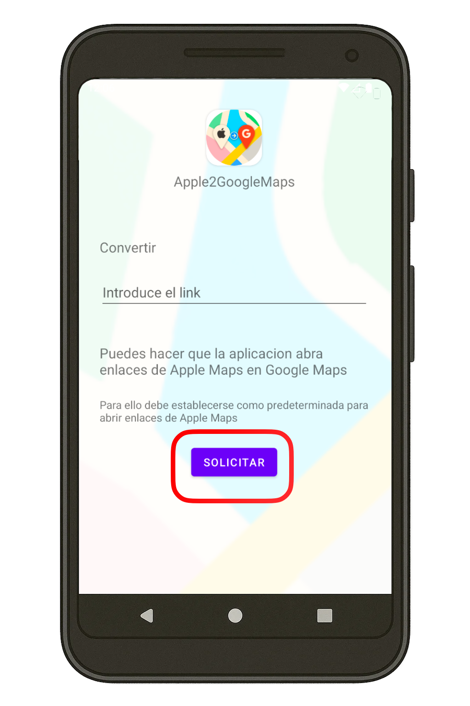
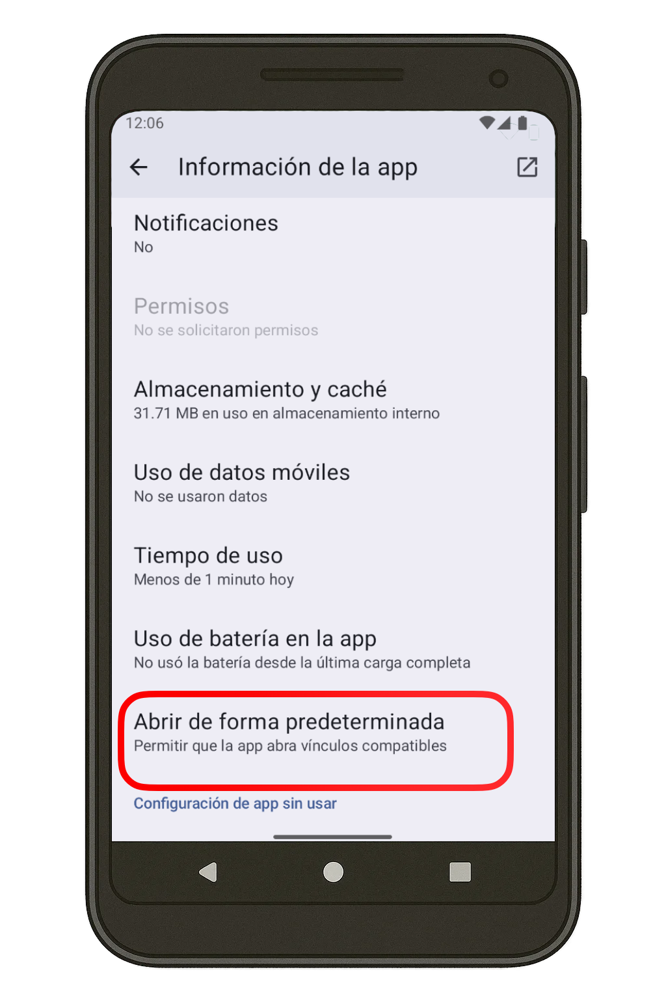
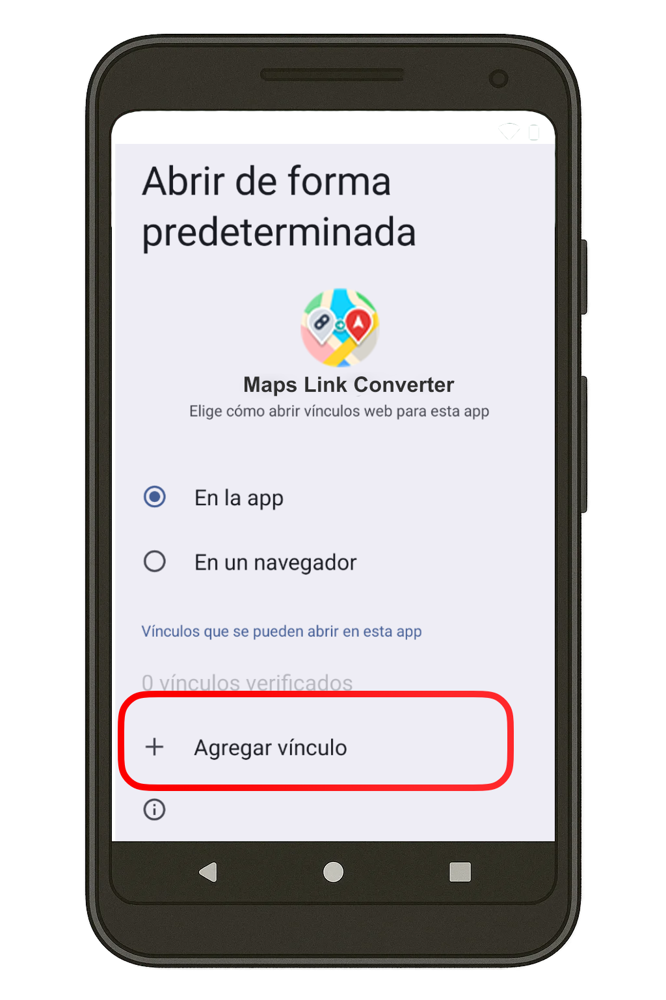
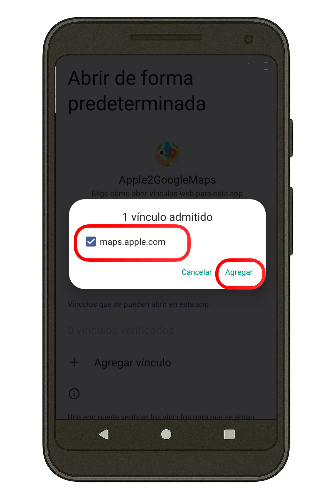

Cómo usar Apple 2 Google Maps Converter
Sigue estos sencillos pasos para configurar y utilizar nuestra aplicación
Configuración inicial
Instala la aplicación
Descarga e instala A2GMC desde Google Play Store.
Abre la aplicación
Abre A2GMC por primera vez para configurar los permisos necesarios.
Concede permisos
Cuando se te solicite, concede permiso a la aplicación para abrir enlaces.







Configuración en dispositivos específicos
Configuración en dispositivos Android estándar
-
Abre Ajustes
Ve a "Ajustes" en tu dispositivo Android.
-
Aplicaciones
Selecciona "Aplicaciones" o "Administrador de aplicaciones".
-
Busca A2GMC
Encuentra y selecciona "Apple 2 Google Maps Converter".
-
Abrir por defecto
Selecciona "Abrir por defecto" o "Establecer como predeterminado".
-
Activar "Abrir enlaces compatibles"
Asegúrate de que la opción "Abrir enlaces compatibles" esté activada.
Configuración en dispositivos Xiaomi
-
Abre Ajustes
Ve a "Ajustes" en tu dispositivo Xiaomi.
-
Aplicaciones
Selecciona "Aplicaciones" y luego "Administrar aplicaciones".
-
Busca A2GMC
Encuentra y selecciona "Apple 2 Google Maps Converter".
-
Permisos
Selecciona "Permisos" y asegúrate de que todos los permisos necesarios estén concedidos.
-
Otras configuraciones
Selecciona "Otras configuraciones" y luego "Abrir por defecto".
-
Activar "Abrir enlaces compatibles"
Asegúrate de que la opción "Abrir enlaces compatibles" esté activada.
Uso diario
Método 1: Compartir enlace
- Cuando recibas un enlace de Apple Maps, mantén presionado el enlace.
- Selecciona "Compartir" en el menú que aparece.
- Busca y selecciona "A2GMC" en las opciones de compartir.
- La aplicación procesará el enlace y lo abrirá automáticamente en Google Maps.

Método 2: Abrir directamente
- Si has configurado correctamente los permisos, simplemente toca el enlace de Apple Maps.
- El sistema te preguntará con qué aplicación deseas abrirlo.
- Selecciona "A2GMC" y marca "Siempre" si deseas que sea la opción predeterminada.
- La aplicación procesará el enlace y lo abrirá automáticamente en Google Maps.

Preguntas frecuentes
¿Por qué la aplicación necesita permisos para abrir enlaces?
A2GMC necesita este permiso para poder interceptar los enlaces de Apple Maps y redirigirlos a Google Maps. Sin este permiso, la aplicación no podrá funcionar correctamente.
¿La aplicación recopila mis datos de ubicación?
No. A2GMC no recopila ni almacena ningún dato de ubicación. La aplicación solo procesa los enlaces para convertirlos al formato de Google Maps y no guarda ninguna información sobre los lugares que visitas.
¿Funciona con todos los enlaces de Apple Maps?
Sí, A2GMC está diseñado para funcionar con todos los formatos de enlaces de Apple Maps, incluyendo ubicaciones, rutas y búsquedas.